Una interfície és la part de l'hardware i software que permet interactuar amb un sistema.
Exemples d'interfícies inclouen la pantalla d'un microones, un caixer automàtic o la interfície gràfica d'un sistema operatiu o aplicació.
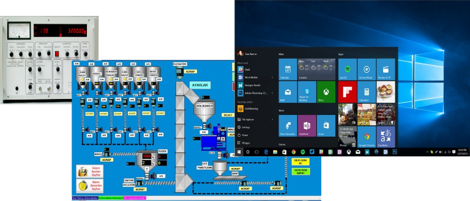La Interfície d'Usuari (UI) és el conjunt d’elements que proporcionen informació a l'usuari i permeten la interacció, ja sigui de forma física o lògica, entre l'usuari i l'ordinador.
Les interfícies d'usuari gràfiques (GUI) fan servir elements visuals com menús, finestres i diàlegs per fer que la interacció amb l'ordinador sigui senzilla i intuïtiva.
L'Experiència de l'Usuari (UX) es refereix al sentiment que experimenta una persona després d'utilitzar un producte o servei digital i està relacionat amb les seves sensacions i satisfacció.
(Aquí pots llistar exemples de males interfícies web)
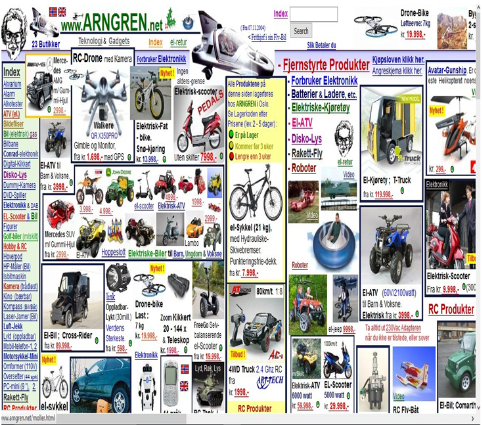(Aquí pots llistar exemples de males interfícies d'escriptori)
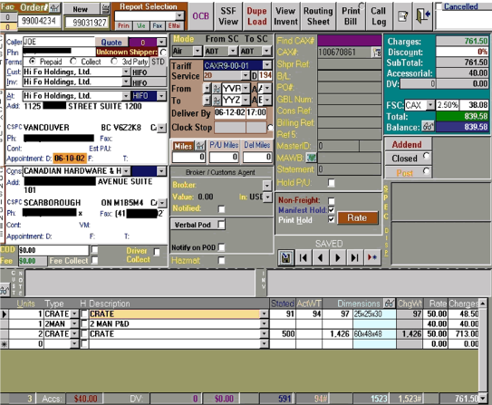L'Interacció Persona-Ordinador (IPO) és l'estudi del disseny d'interfícies i de la interacció entre persones i ordinadors. Aquesta disciplina combina ciències humanes, enginyeria i disseny amb l'objectiu de minimitzar els errors i maximitzar la satisfacció de l'usuari.
1963. Ivan Sutherland va crear SketchPad, un sistema que permetia la manipulació d'objectes gràfics mitjançant un llapis òptic.
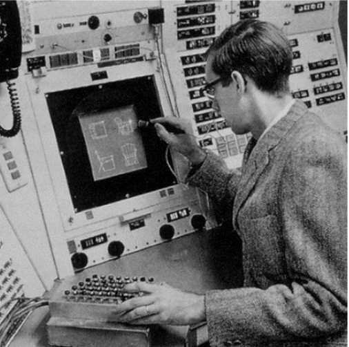1963. Engelbart: Dissenya el primer Mouse.
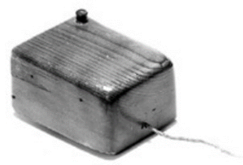Anys 70. Xerox PARC: Primera interfície gràfica. Van crear el model i els dispositius per a les interfícies que incloïen finestres, menús, icones, botons, etc.
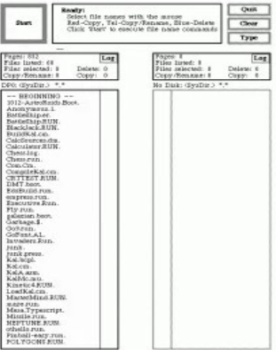1977. ALAN KAY, Xerox PARC: Dynabook: El Dynabook va ser un dels precursors dels ordinadors portàtils o dels tablet pc. Tenia com a objectiu acostar els infants al món digital.
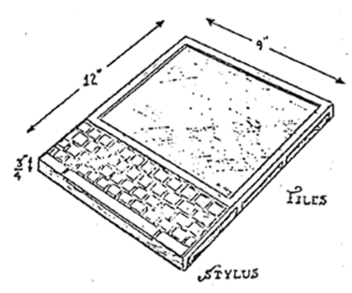1981. Xerox Star 8010: Surt al mercat el primer sistema comercial que fa extensiu l’ús de la manipulació directa.
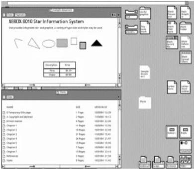1982 i 1984. Surt al mercat el primer sistema comercial que fa extensiu l’ús de la manipulació directa: Xerox Star.
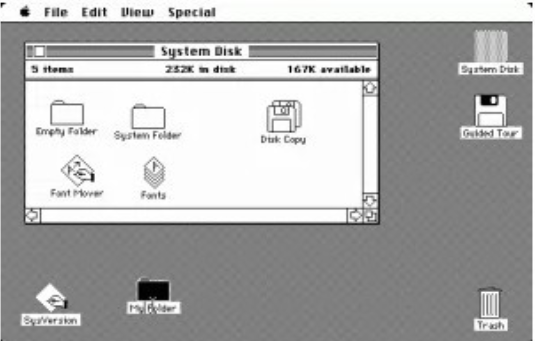1985. La computadora Amiga introdueix el color i Microsoft fa la primera interfície gràfica.
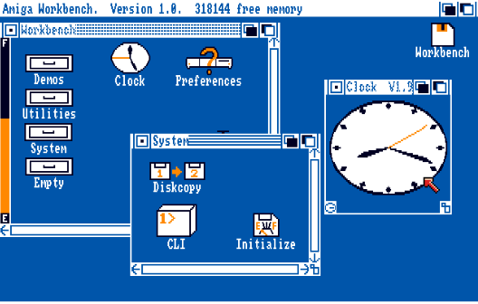 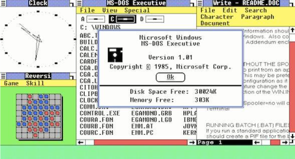1986. Sistema Irix 3 (per sistemes Unix de 64 bits).
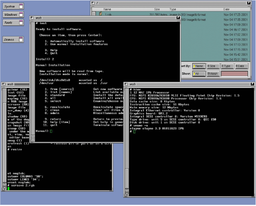1990. Windows 3.0.
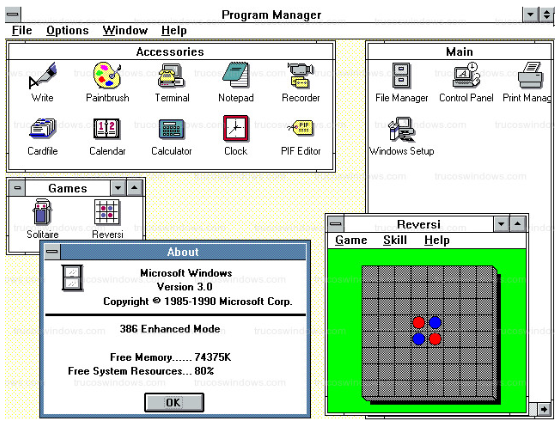1995. Microsoft Windows 95.
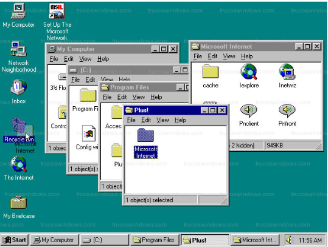2001. Mac OSX Cheetah.
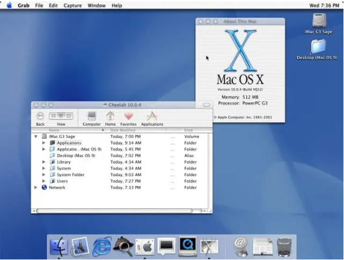Sistemes actuals.
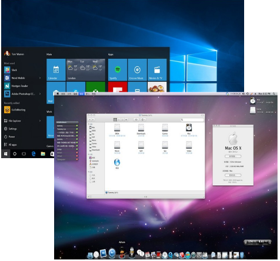 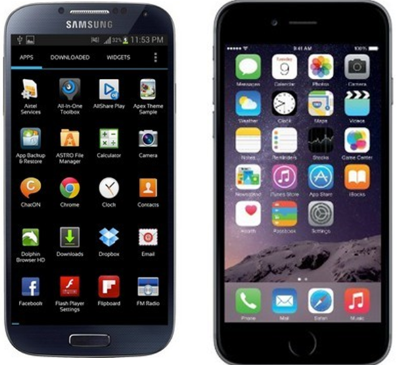Aquí pots trobar un vídeo explicatiu sobre el tema:
(aquest video apart de explicatiu tambe conte petites bromes per que la explicacio sigui mes amena)